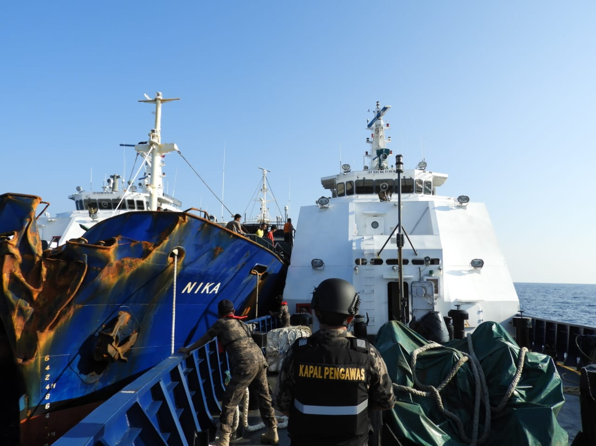
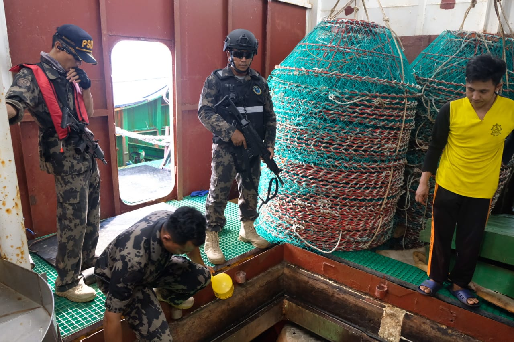
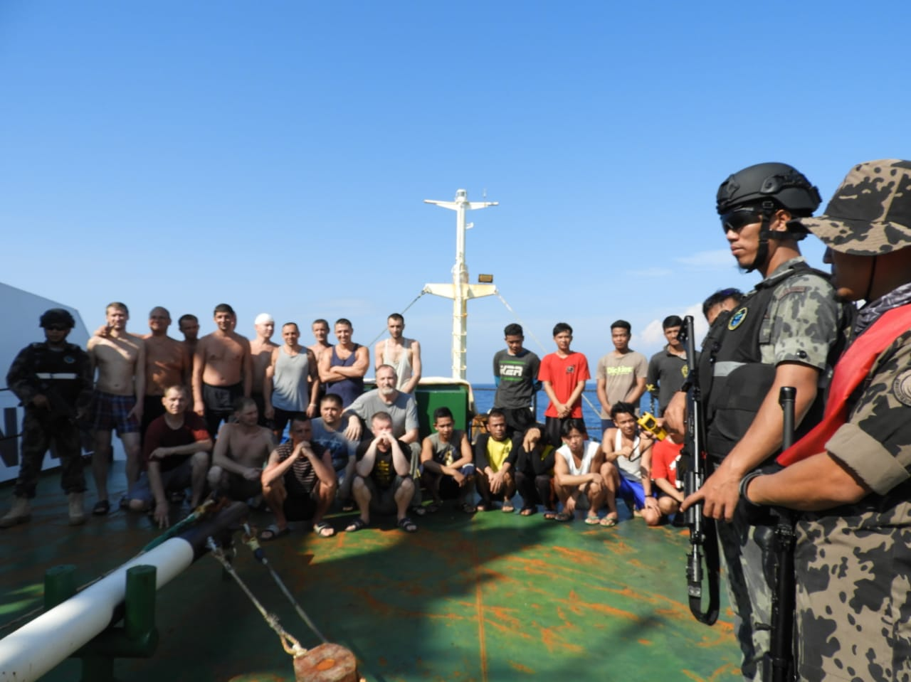
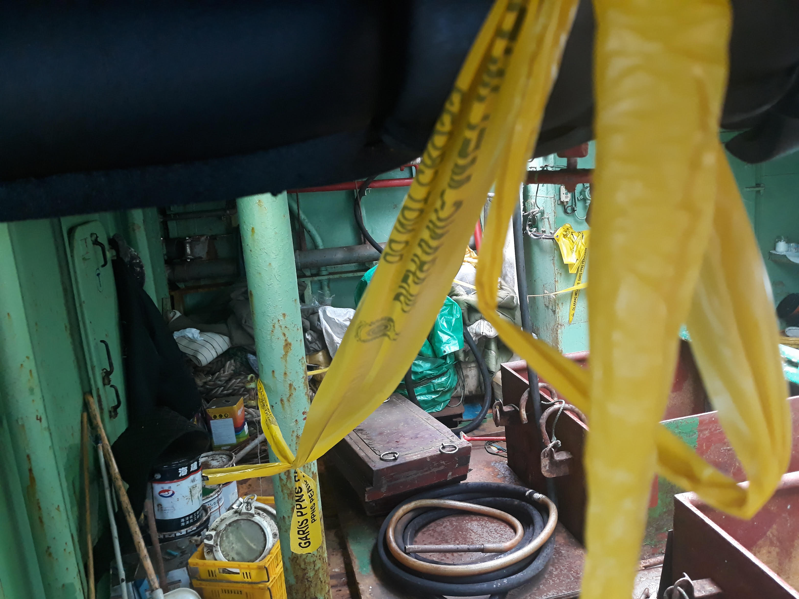

Analisis data sistem navigasi oleh Global Fishing Watch (GFW) membantu pemerintah menangkap kapal pencuri ikan yang diburu Interpol. Organisasi nirlaba yang fokus pada upaya pengolahan data pelayaran tersebut terlibat aktif dalam operasi penangkapan MV Nika di Selat Malaka, belum lama ini.
Tujuh pekan sudah MV Nika parkir di Pangkalan Pengawasan Sumber Daya Kelautan dan Perikanan (PSDKP) Batam, Kepulauan Riau. Kapal motor asal Panama itu dilarang berlayar oleh PSDKP sejak ditangkap di perairan Pulau Weh, Aceh, pada 12 Juli 2019.
Sebulan sebelum ditangkap, MV Nika masuk daftar buron Interpol karena diduga melakukan kejahatan perikanan di sejumlah negara. Sejak 2006, kapal berbobot 750 gross tonnage (GT) itu enam kali berganti nama. Bendera pelayaran pun ditukar hingga tujuh kali.
Keberhasilan penangkapan MV Nika di Indonesia merupakan buah dari penggunaan analisis data pelayaran dan kerja sama otoritas pengawas perairan global. Analisis data itu disuplai oleh Global Fishing Watch (GFW), organisasi nirlaba di bidang pengolahan data pelayaran untuk konservasi laut. GFW memiliki sebuah platform publik yang berisi data aktivitas penangkapan ikan yang real-time.
Platform peta Global Fishing Watch, dari sini, orang awam bisa melacak kapal apapun yang mempunyai sinyal AIS atau VMS.
Platform tersebut juga bisa digunakan untuk melacak kapal-kapal yang mencuri ikan. GFW menggunakan sinyal dari sistem navigasi kapal, baik automated identification system (AIS) ataupun vessel monitoring system (VMS). Sinyal ini akan muncul di peta platform mereka dengan bentuk bulatan putih sesuai titik lokasi kapal serta dilengkapi data arah dan kecepatan kapal.
Chief Executive Officer GFW, Tony Long mengatakan ada sekitar 60 ribu kapal di seluruh dunia yang bisa dipantau oleh GFW. Sementara itu, untuk kapal Indonesia, ada sekitar 5 ribu kapal yang bisa dilacak. Dengan pelacakan itu pun, GFW bisa memvalidasi keberadaan kapal ikan asing.
PENANGKAPAN MV NIKA
Pergerakan kapal MV Nika, dari pelabuhan hingga pengangkapan.
Berdasarkan data GFW, sebelum ditangkap, MV Nika terpantau berangkat dari Busan, Korea Selatan, menuju Samudera Atlantik bagian selatan. Di sana, kapal itu kedapatan melanggar ZEE Georgia Selatan. MV Nika pun ditangkap kapal patroli. Namun, karena tidak ada bukti tangkapan ikan, kapal itu dilepas.
Dari sana, MV Nika pun kembali berlayar mengarungi Samudera Atlantik, Samudera Hindia, dan mengarah ke Indonesia. Namun, ketika mendekati perairan Indonesia, kapal itu mematikan AIS miliknya. Tanpa sinyal AIS, pergerakan MV Nika jadi sulit diikuti. Beruntung, GFW memantau pergerakan kapal itu sejak Februari lalu. Dengan tabungan data itu, mereka bisa mengkalkulasi arah pelayaran MV Nika.

Haluan MV Nika yang rusak tertabrak gunung es. [GFW/Regina Safitri]

Perlengkapan MV Nika yang dipakai untuk menangkap ikan. [GFW/Regina Safitri]

Kru MV Nika setelah ditangkap oleh Satgas 115 yang terdiri dari PSDKP dan TNI AL. [GFW/Regina Safitri]

Interior MV Nika yang saat ini ditahan di Batam. [TEMPO/Yogi Eka Sahputra]
Didukung informasi dari PSDKP, TNI Angkatan Laut, dan Interpol, pergerakan MV Nika tetap terpantau, termasuk ketika kapal itu mengarah ke Selat Malaka. Pada 12 Juli pagi, GFW dan petugas patroli sepakat mengubah arah pencarian. “Perhitungan kami benar, MV Nika bisa ditangkap,” kata analis data GFW, Imam Prakoso, saat dihubungi pada Rabu, 24 Juli 2019.
Sebelumnya, data GFW juga pernah membantu pelacakan kapal-kapal pencuri ikan lainnya di Indonesia, yakni Fu Yuan Yu 831 dan STS-50 alias Andrey Dolgov. Fu Yuan Yu 831 merupakan kapal milik perusahaan Cina yang terdaftar sebagai kapal perikanan Timor Leste. Kapal berukuran 598 GT ini terdeteksi oleh GFW sering melanggar batas Indonesia-Timor Leste sejak Juli 2017. Kapal itu akhirnya ditangkap oleh PSDKP pada 29 November 2017 dengan muatan ikan sebanyak 30 ton.
Sementara STS-50 adalah kapal buronan Interpol yang dalam operasinya menggunakan delapan bendera, yakni Sierra Leone, Togo, Kamboja, Korea Selatan, Jepang, Mikronesia, Filipina, dan Namibia. Pada April 2018, Interpol mengirimkan permintaan resmi kepada Indonesia untuk memeriksa STS-50 yang bergerak menuju Indonesia.
Berdasarkan data GFW, sekitar Maret sampai Mei 2016, STS-50 berada di Namibia. Pada Desember 2017 hingga April 2018, kapal itu terpantau berangkat dari Mozambik, lalu menyeberangi Samudera Hindia. Saat melintas di perairan Aceh pada 6 April 2018, STS-50 disergap TNI Angkatan Laut.
Selain untuk melacak kapal, menurut Imam, data-data GFW juga bisa menunjukkan aktivitas kapal ikan asing di Indonesia yang menurun drastis sejak moratorium izin kapal ikan asing diberlakukan pada 2014. Sebelum moratorium, aktivitas mereka mencapai 6.800 jam per bulan. Tercatat sekitar 25 kapal asing beroperasi di Laut Arafura dan Samudera Pasifik di utara Papua.
Berkurangnya jam operasi kapal asing di perairan Indonesia.
Sementara setelah moratorium, aktivitas kapal ikan asing yang terlihat dari sinyal AIS menurun signifikan, khususnya di Laut Arafura. Namun, sepanjang 2017 hingga 2018, masih ada kapal ikan asing yang beroperasi di perairan Indonesia, tapi hanya di area perbatasan ZEE.
Sebenarnya, sejak November 2015, moratorium izin kapal ikan asing sudah dicabut. Namun, kapal-kapal yang terkena moratorium –kini lazim disebut kapal eks asing–masih dilarang beroperasi di Indonesia. Menurut data GFW, aktivitas kapal eks asing sudah berkurang signifikan sejak Januari 2015. Sejak Juli 2015 hingga saat ini, keberadaan kapal eks asing pun perlahan menghilang.